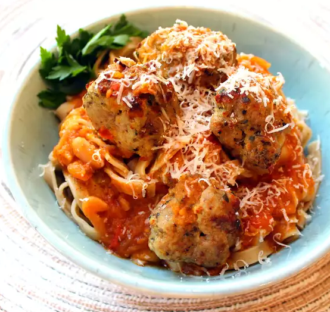

Meatballs

Description
These are excellent, easy to make meatballs.
They take less than half an hour to prepare, and
you won't be disappointed in them. If you want, feel
free to add additional cooking time in a sauce of your
choosing!
With just a few eggs, a little seasoning, some beef,
and plenty of bread crumbs, you'll have an amazing
meal in no time at all! I make meatballs all the time
and this is my favorite way to do it.
Ingredients
- One egg
- A tablespoon of italian seasoning
- A tablespoon of basil
- A pinch of salt
- A pinch of black pepper
- A pinch of garlic powder
- A pound of ground beef
- 1/4 cup of bread crumbs
Steps
- Set the oven to broil
- Mix ingredients thoroughly
- Shape into 1/3rd cup balls, approximately 15 or so
- Place on a greased baking sheet
- Cook 15 minutes, turn over, and cook an additional 5
- Optional: Heat in a sauce of your choice for thirty minutes
- Enjoy!